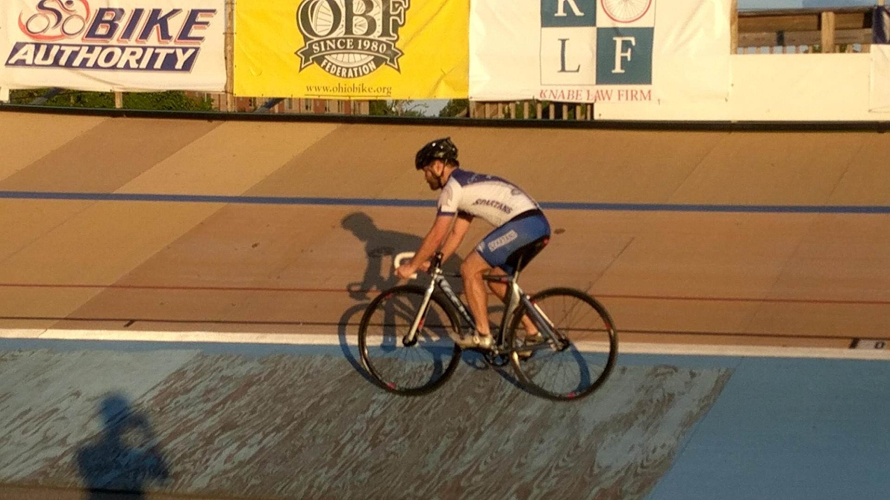
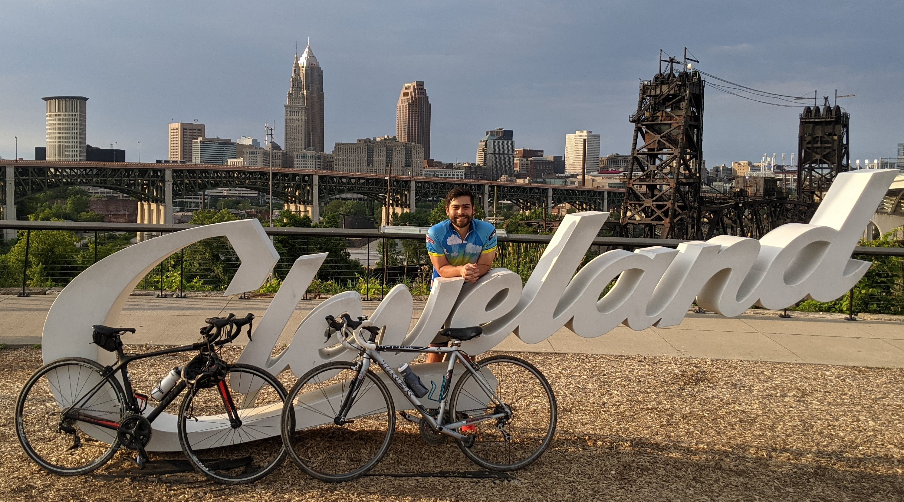
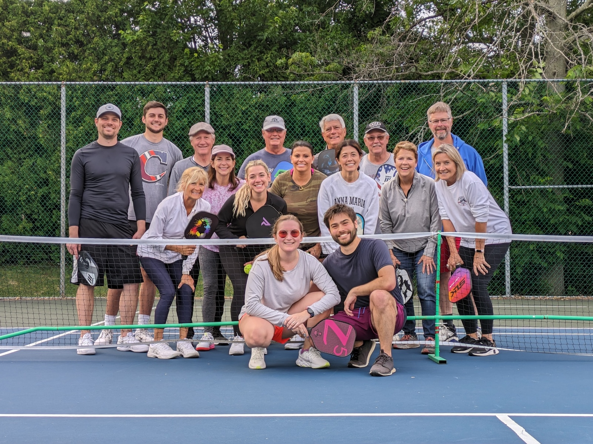
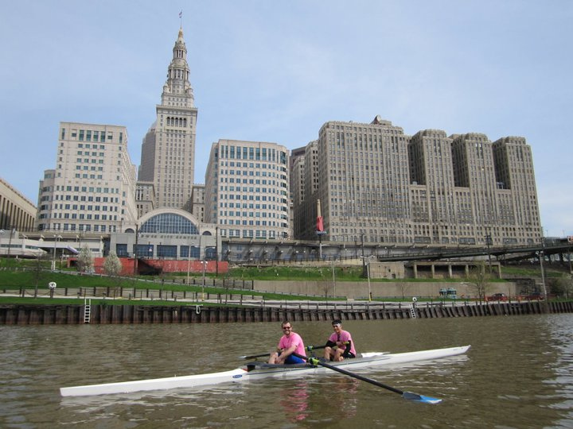
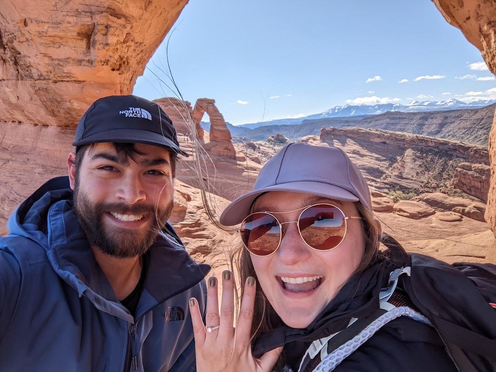
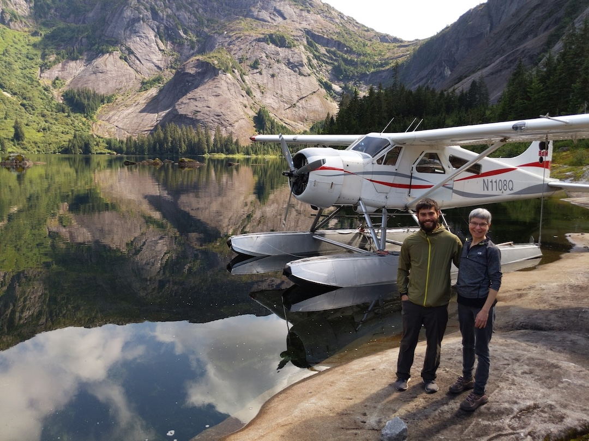
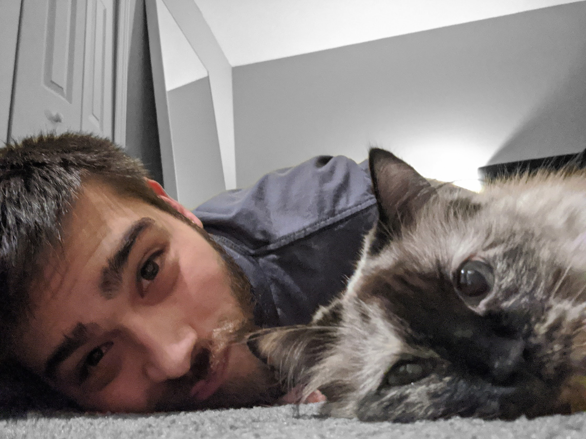

About Me
NASA over 15 years
Skills
- COMSOL (CFD/FEA), MotorSolve, OpenVSP, OpenMDAO, Solidworks, Engineering Sketchpad, Onshape, LaTeX, Processing, Arduino IDE (embedded systems), D3.js, Meteor.js, Android Studio, OpenSCAD, Sketchup, TensorFlow, Google CoLab, Travis CI, FAA Part 107 Remote Pilot, Slack/Teams, Sharepoint/PowerAutomate, Atlassian suite, Asana
Programming
- Python, Matlab/Simulink, Javascript, Git (Version Control), C++, Excel, PowerBI
Volunteering
- Federal Executive Board Tutor, FIRST Robotics volunteer, Intel Sci & Eng. Fair Mentor, Future City Nat’l Judge
Professional Activities
- Invited Lecturer at Purdue University and Texas A&M, Intern at Northeastern University Work cited in the Wall Street Journal, Forbes Magazine, Popular Science, IEEE Spectrum
Hobbies
- Cycling, Pickleball, Rowing, Sailing    
- Inline & Ice Skating ,
- Drone Photography
Family
-


